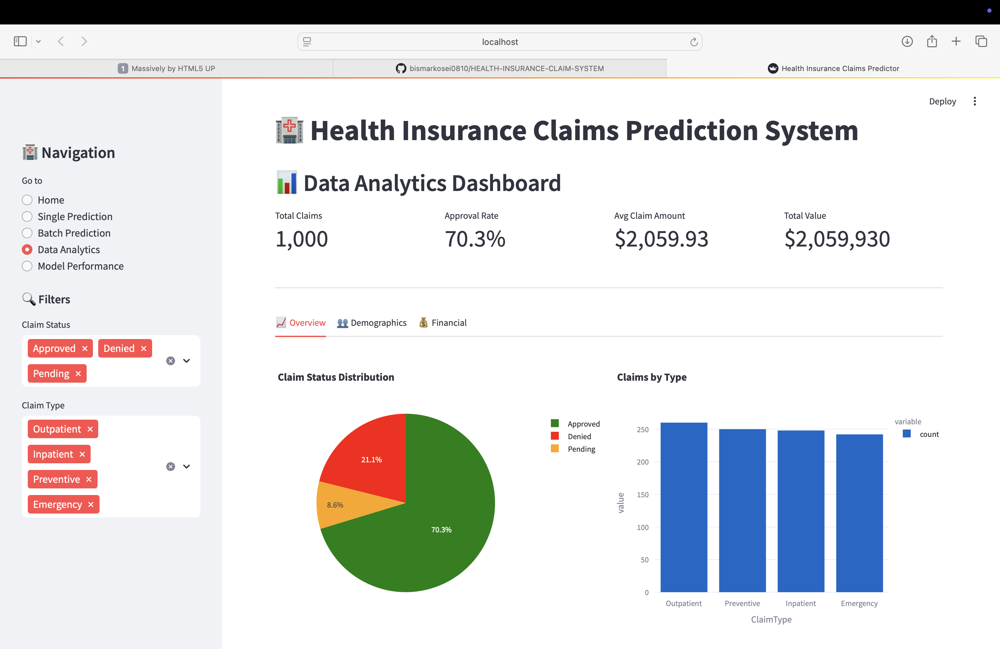

Featured Machine Learning Project
Health Insurance Claim Prediction System
A machine learning web app that evaluates health insurance claims and predicts approval status, denial risk, pending review, and expected payout amount. The system uses patient demographics, provider details, claim history, and engineered features to support faster, more consistent claim review.
Built with Python, XGBoost, Scikit-learn, and Streamlit, achieving 94% accuracy across 1,000+ records.
